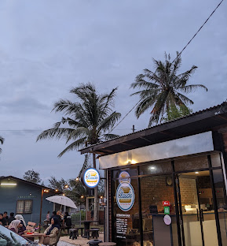

Claude Cafe Terengganu
Welcome to Claude Café Terengganu!
Enjoy delicious food and refreshing drinks in a comfortable and friendly environment.
We are committed to providing quality food and excellent service to every customer.
Our cafe slogan: "Fast Food, Done Right!"
Our Menu / Services
- Philly Cheesesteak
- A delicious sandwich filled with thinly sliced beef, melted cheese, and sautéed onions, served in a soft roll. RM17.00
- Beef & Egg
- A satisfying beef burger topped with a freshly cooked egg, served with delicious sauces for extra flavour. RM 18.00
- Mozza Burger
- A juicy burger topped with melted mozzarella cheese, fresh vegetables, and savoury sauce, served in a soft burger bun. RM 20.00
- Surf & Turf
- A flavourful combination of seafood and grilled meat, served together for a delicious and satisfying meal. RM 18.00
How to Order
- Browse our menu and choose your favourite items.
- Place your order at the counter.
- Make your payment.
- Wait for your food and drinks to be prepared.
- Collect your order and enjoy!
Facilities
- Free Wi-Fi
- Air-conditioned dining area
- Has outdoor seating
- Parking space for customers
What Our Customers Say
"The food tastes amazing, the café is comfortable, and the staff are friendly.
A great place to enjoy fast food in Terengganu!"
- A Happy Customer

Our cozy atmosphere
Contact Us
Address:
Claude Café Terengganu
Jalan Sultan Zainal Abidin
20000 Kuala Terengganu
Terengganu, Malaysia
Email: claude.cafe@example.com
Find us on:
Find us on Google Maps